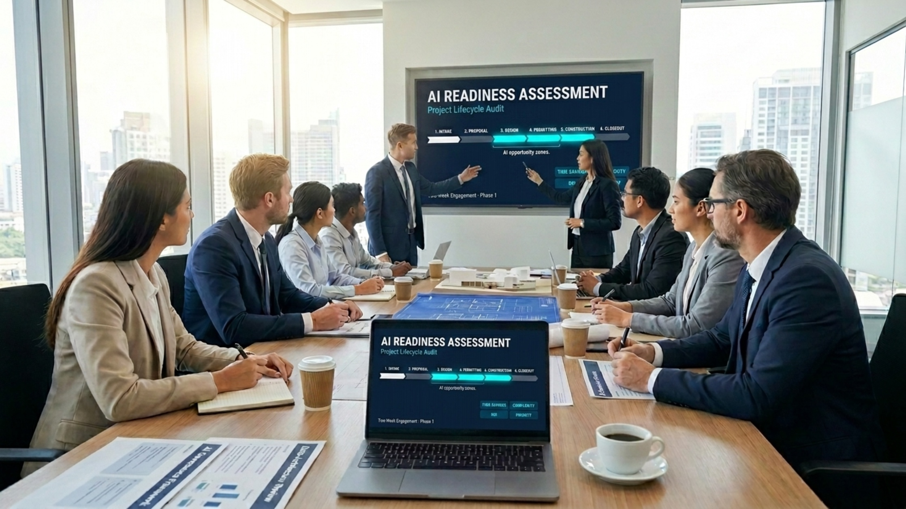

A two-week, flat-fee audit that maps your operations and prioritizes AI-driven automation

Most teams know AI can streamline their operations — they just don't know where it makes the biggest difference, which tools fit their stack, or what a realistic ROIReturn on Investment looks like.
Our AI Readiness Assessment answers those questions. We conduct a structured audit of your current business workflows, technology stack, and operational processes, then identify, prioritize, and quantify the highest-leverage automation opportunities across your project lifecycle.
This is not a strategy deck. It is a working document that names the workflows worth automating, the tools that fit your stack, and the order in which to do it.
We focus on quick wins you can implement within days of the assessment concluding, alongside a longer roadmap of higher-investment opportunities for Phase 2.
We document your end-to-end project flow across six phases — finding where AI removes friction at every step.
Lead capture, qualification, scheduling, and initial response — often the first place AI eliminates repetitive overhead.
Estimation, proposal drafting, and scope alignment — frequently a high-ROI target for AI-assisted document generation.
Core delivery workflows where AI augments — not replaces — expert judgment, with the biggest opportunities in coordination and revision cycles.
Compliance tracking, submission packages, and review correspondence — workflows where AI shines at structured document handling.
RFIRequest for Information handling, submittals, change orders, site reports — repetitive, document-heavy, and ripe for automation.
Project archives, final deliverables, and reporting — where AI accelerates knowledge capture for future projects.
Every opportunity we identify is scored on the same four dimensions, so you can make funding decisions with real data.
Hours per week or month recovered by automating a given workflow — calculated against your actual project volume.
Realistic effort to roll out, including integration, training, and process change. We flag what's a one-week lift versus a multi-month project.
Projected return based on time saved, error reduction, and quality improvements — compared against tool licensing and implementation cost.
How well the opportunity matches the strategic priorities you tell us about in kickoff — not just generic best practice.
A flat-fee, fixed-scope engagement designed to deliver value before you commit to a larger investment.
Completed within approximately two weeks of signed SOW, NDA, and Data Handling Addendum — contingent on timely access and responsiveness.
Fixed price, no hourly billing. No additional charges unless scope changes are agreed in writing in advance.
The entire $2,500 engagement fee is credited toward any Phase 2 implementation engagement contracted within 180 days.
Read-only or observer-level access where technically possible. NDA and Data Handling Addendum executed up front. No access to your clients' personal data beyond what's necessary to understand workflow structure.
We are operators who build, deploy, and run real systems — not consultants selling AI hype. That perspective shapes every recommendation we make:
The Assessment is intentionally scoped as a low-risk first engagement. You get a complete, written deliverable in two weeks for a flat fee, with no obligation to move into a larger Phase 2.
If you do choose to move forward with implementation, the full assessment fee credits back — so you've effectively paid for diligence, not for a sales pitch.
Ready to find your highest-leverage AI opportunities? Let's talk.
A $2,500 flat-fee Phase 1 engagement, fully credited toward any Phase 2 implementation within 180 days.